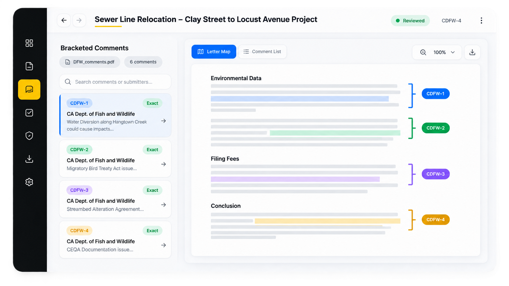

AI-native environmental review
Envisor gives consultants and agencies a shared record for CEQA and NEPA review — from first draft to final determination, without losing the paper trail.

Trusted by teams at


Cut the time from project description to a review-ready record, without cutting corners on defensibility.
Every citation, comment, and revision stays traceable, so the administrative record holds up under scrutiny.
Take on more projects with the same team, without the review queue becoming the bottleneck.
The Mapping Intake & Review Assistant. Give it a project description and an APN, and MIRA identifies concerns, likely petitioners, and mitigation strategies, then carries the project through to a review-ready Initial Study.
Get a demoConsultants and agencies work from the same connected record, from first draft to final determination.
Run every project on one platform: research, evidence, drafting, and comment response in a single connected record.
Explore for Consultants
Move projects through review with a defensible, traceable record, from applicability to determination.
Explore for Agencies
Move faster through complex environmental review without losing the context, traceability, or defensibility the work demands.

Mapping Intake & Review Assistant. From a project description and APN to concerns, likely petitioners, and mitigation strategies.

CEQA Automated Response Assistant. Bracket, group, assign responsible parties, and draft defensible responses tied to the record.

Leverage public and private data to generate review-ready environmental reports, grounded in the same connected record.
Shared intelligence layer. Every module connects to the same project facts, citations, evidence, and administrative record.
Explore statutes, thresholds, and precedent through free semantic search of the CEQA database.
Transform complex environmental documents into WCAG 2.2, ADA-compliant, accessible formats.
A project description and APN are all MIRA needs to identify concerns, likely petitioners, and mitigation strategies.
Leverage public and private data to generate review-ready environmental reports.
Bracket, group, assign responsible parties and timelines, and generate responses with CARA.
Arm approving agencies with the administrative record and monitor mitigation measures over time.
A typical EIR or IS process, compressed.
Billable hours reduced across the review cycle.
Surface evidence invisible to the human eye.
“I actually think the CARA responses are better than what a respected firm prepared.”
StantecPrincipal Planner
“This technology can easily reduce the time responding to comments by 70%.”
EPD SolutionsPrincipal Planner
“Firms without these tools will be uncompetitive within 10 years.”
UCOP PlanningBrian Harrington
“This technology can easily reduce the time responding to comments by 70%.”
Principal Planner, EPD Solutions